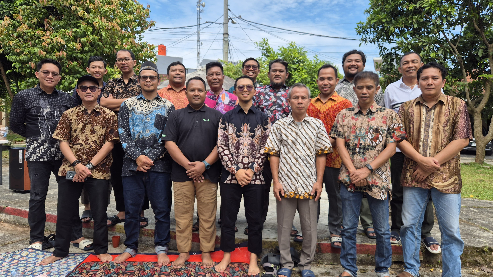
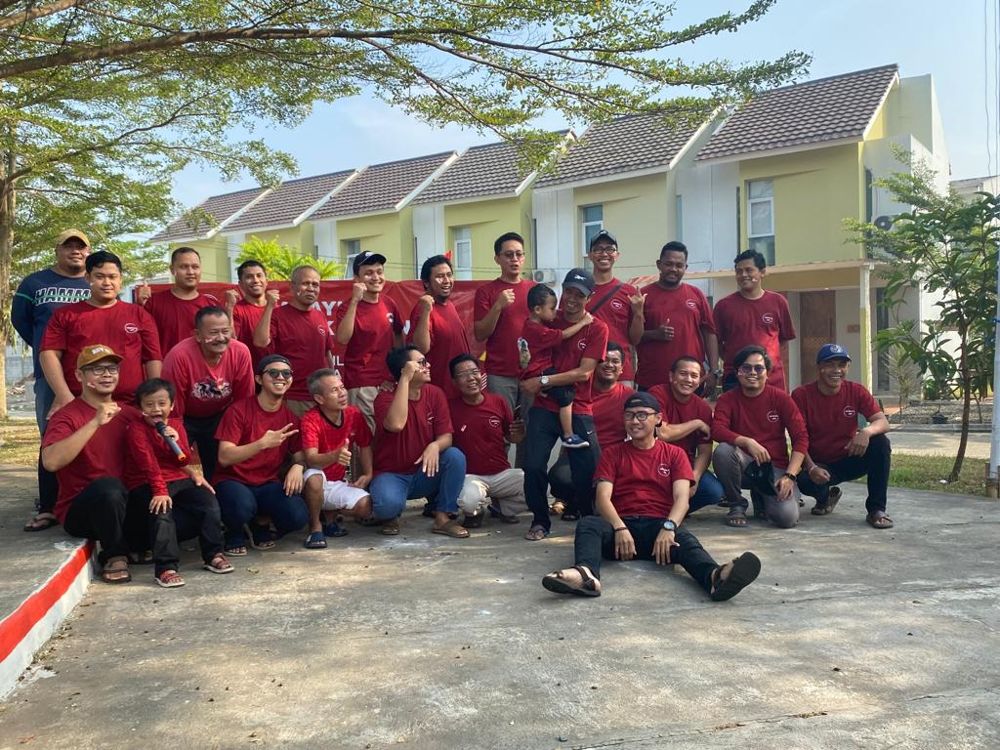
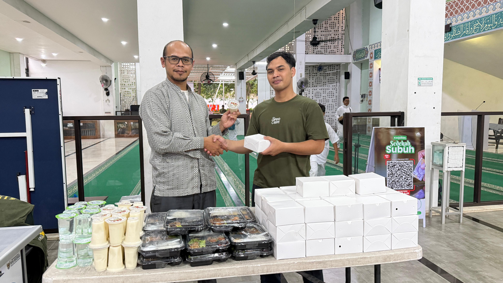
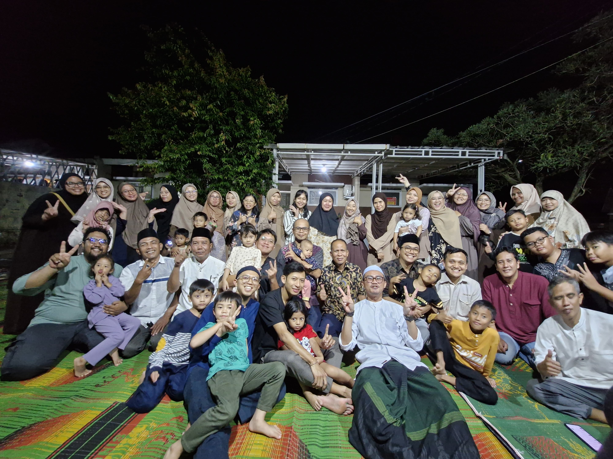
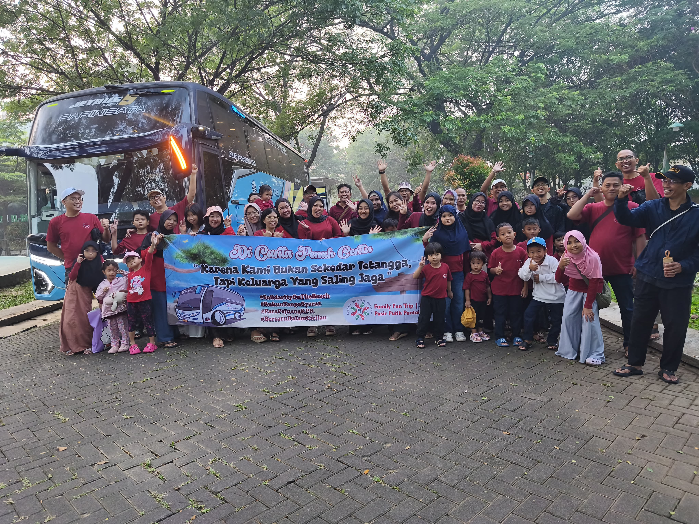
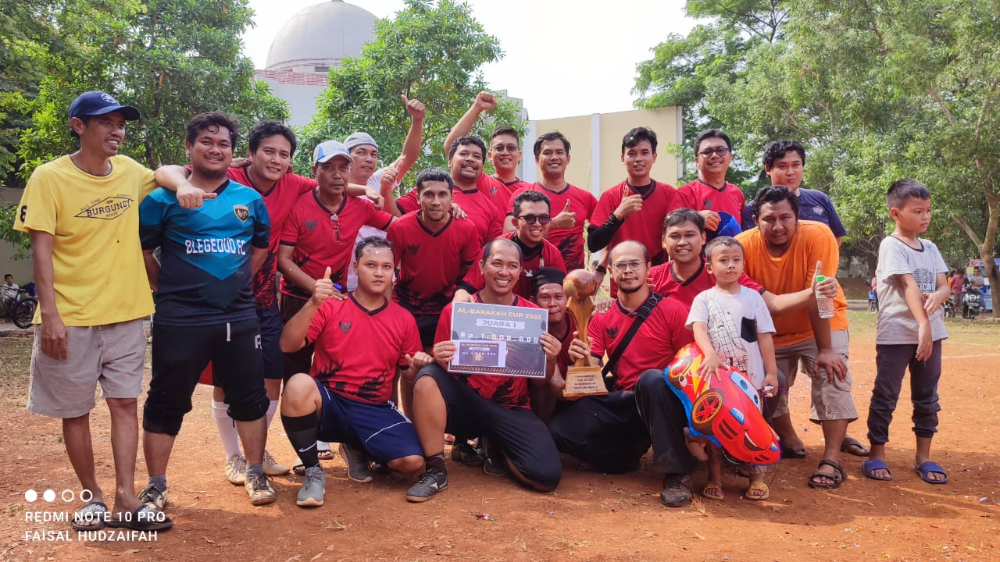
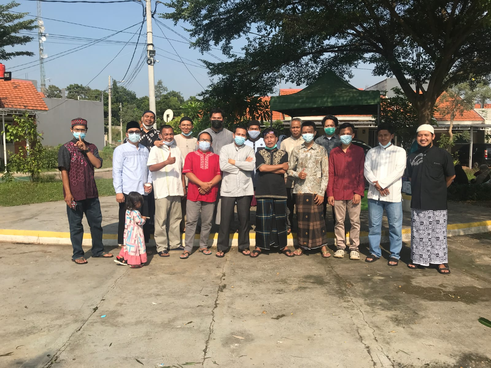

Galeri Kegiatan Warga
RT 06 / RW 13 Relife Greenville Cileungsi Cluster Lakesville
RT 06 / RW 13 Relife Greenville Cileungsi Cluster Lakesville
Halaman ini berisi dokumentasi kegiatan warga RT 06 / RW 13 Relife Greenville Cileungsi Cluster Lakesville sebagai arsip kegiatan lingkungan, kebersamaan warga, dan informasi publik RT.
Foto dokumentasi dapat ditambahkan secara berkala sesuai kegiatan yang telah dilaksanakan oleh warga dan pengurus RT.

Dokumentasi kegiatan kerja bakti warga dalam menjaga kebersihan dan kerapian lingkungan RT.

Dokumentasi kegiatan rapat warga sebagai sarana komunikasi, musyawarah, dan pengambilan keputusan bersama.

Dokumentasi kegiatan peringatan Hari Kemerdekaan Republik Indonesia bersama warga lingkungan RT.

Dokumentasi kegiatan sosial, kepedulian warga, bantuan, dan program kebersamaan di lingkungan RT.

Dokumentasi kegiatan keagamaan sesuai keyakinan masing-masing warga dalam mempererat kerukunan lingkungan.

Dokumentasi rekreasi bersama untuk menumbuhkan rasa kebersamaan yang hangat diantara warga.

Kegiatan olahraga bersama warga RT 006 / RW 13 Relife Greenville menjadi salah satu upaya untuk menjaga kesehatan, kebugaran, dan kebersamaan antarwarga.

Kegiatan Halal Bihalal warga RT 006 / RW 13 Relife Greenville menjadi momen untuk mempererat silaturahmi, saling memaafkan, dan membangun kebersamaan antarwarga.

Momen Lebaran menjadi waktu yang penuh kehangatan untuk saling memaafkan, mempererat tali silaturahmi, dan memperkuat rasa kekeluargaan antarwarga.